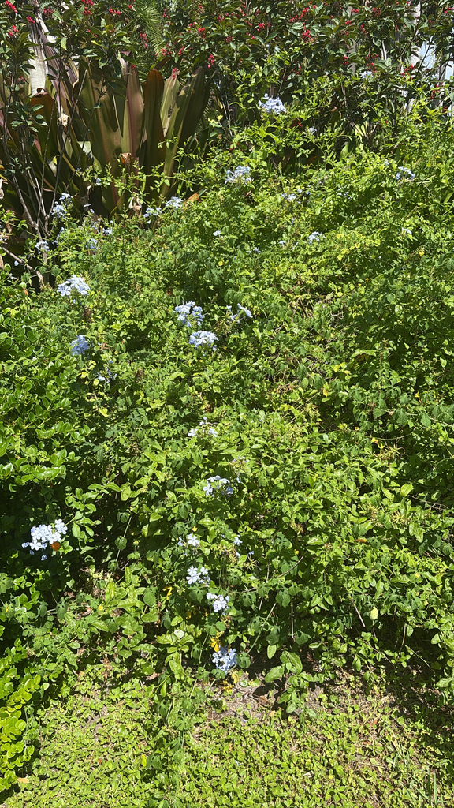

Native to South Africa and Mozambique, where it grows as a scrambling shrub in lowland scrub and thicket. Now one of the most popular warm-climate flowering shrubs worldwide, valued for its near year-round clouds of pale blue bloom.
Plumbago is a genuine butterfly magnet. It is the larval host plant for the Cassius blue (Leptotes cassius), a tiny native blue butterfly whose caterpillars feed on the foliage and flowers, and its nectar-rich, long-tubed blue flowers draw butterflies, long-tongued bees, and other pollinators through most of the year. The sticky seed capsules enlist passing animals for dispersal. As a large, dense, evergreen shrub, it also offers nesting and shelter cover for small birds — useful structure right at the park's entrance.
Spreads by underground runners (suckers) and seed; propagated easily from seed, cuttings, or rooted suckers. Vigorous — resprouts readily after heavy pruning.
Dense terminal clusters of five-petaled, phlox-like flowers about an inch wide, pale sky-blue (white and deeper-blue forms exist), each on a slender tube. Blooms spring through fall, nearly year-round in Florida.
A small, barbed, sticky capsule — the glandular-haired calyx clings to fur and clothing, dispersing the seed.
Thin, oval, bright green (greyish beneath), to about 2 inches, arranged alternately on arching semi-woody stems.
Mounding to scrambling shrub; can climb or sprawl several feet if unpruned.
At the front entrance, find the big blue-flowered bush on Welcome Island beside the Tree Crinum. Touch a spent flower cluster — feel how it sticks to your fingertip; that's the seed-dispersal mechanism at work. Watch the blooms for small blue butterflies (the Cassius blue) darting around their host plant.
PARK CONTEXT: One main specimen, on Welcome Island near the front entrance, beside the Tree Crinum — large for a plumbago and needs regular trimming to control its sprawl. Little else of it elsewhere in the park. It formerly grew around a Bismarck palm that was lost in the hurricanes.
Mildly toxic. The sap can irritate skin, and ingestion can cause digestive upset and mouth/throat irritation. Wear gloves when pruning. Not a serious hazard, but not for eating.